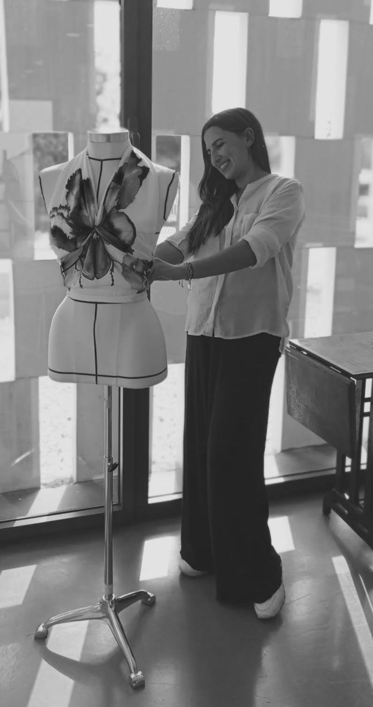

Confeccionamos en nuestro taller de Utrera, Sevilla, desde donde creamos piezas únicas para momentos únicos.

Todas nuestras prendas están confeccionadas en nuestro taller de Utrera, un pueblo de la provincia de Sevilla cargado de historia y tradición artesanal.
Trabajamos Consolación, su madre Consuelo y un equipo de costureras especializadas en la confección a mano. Cada pieza pasa por nuestras manos y llevamos el máximo cuidado en cada puntada.
Creamos diseños exclusivos para ocasiones especiales: bodas, eventos, fiestas. Nos implicamos contigo desde el primer momento, creamos un vínculo y te acompañamos durante todo el proceso creativo.
Reservar consultaDesde la primera conversación hasta que la prenda llega a tus manos, estamos contigo en cada paso.
Nos reunimos (en persona o por videollamada) para conocer tus gustos, la ocasión y lo que buscas. Escuchamos antes de crear.
Desarrollamos propuestas exclusivamente para ti. Ajustamos hasta que el diseño refleje exactamente lo que imaginas.
Seleccionamos juntos los materiales. Trabajamos con telas de calidad, en los colores y texturas que mejor te van.
Nuestro equipo confecciona la pieza en el taller de Utrera con la mayor atención al detalle.
Realizamos las pruebas necesarias para que el resultado sea perfecto. Tu comodidad es tan importante como la estética.
Recibes tu pieza única, lista para ese momento especial. Cuidamos cada detalle hasta el final.
Ya sea para una boda, una fiesta o cualquier ocasión que merezca algo especial, estamos aquí para hacerlo realidad.